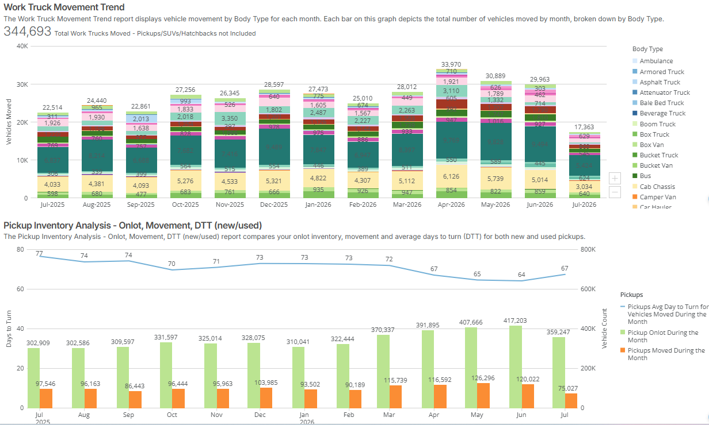
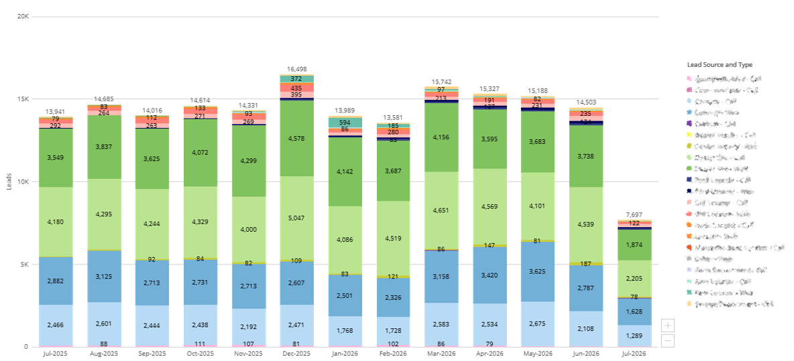

Operational Analytics &
The Single Dealer Dashboard
Case Study: Consolidating complex commercial logistics, inventory velocity, and lead metrics into a single source of truth to expand CSM capacity.

Figure 1: Month-over-month commercial asset movement trends and inventory velocity metrics, tracking onlot volume against days-to-turn (DTT) by vehicle body type.

Figure 2: Multi-channel customer lead attribution dashboard, segmenting monthly acquisition performance by traffic source and communication type.
Executive Summary
In commercial logistics and sales operations, cross-functional teams often lose critical hours toggling between fragmented reporting views. To eliminate this friction, I developed and launched the Single Dealer Dashboard within Domo. This centralized operational matrix integrates high-volume inventory metrics, upfit completion lifecycles, and marketing lead attribution into a single, cohesive interface. The deployment successfully eliminated automated data silos, saving Customer Success Managers (CSMs) and sales reps over 10 hours per week in manual report pulling while drastically accelerating client-facing decision-making.
The Problem: High-Touch Manual Overhead & Fragmented Views
Prior to this solution, account teams and Regional Sales Managers (RSMs) had to manually pull separate reports to gain a holistic view of a dealer’s health. Evaluating a single client required stitching together data from three distinct operational buckets:
- Inventory Logistics: Monitoring volume fluctuations across diverse vehicle chassis configurations (e.g., Cab Chassis, Upfitted Van, Standard Van).
- Velocity & Health Metrics: Tracking "Days to Turn" (DTT) alongside body and photo completion rates to pinpoint bottlenecks on the lot.
- Top-of-Funnel Demand: Correlating operational inventory levels with incoming phone and web lead volumes.
This fragmentation forced strategic teams into a reactive posture, wasting roughly 25% of their weekly capacity on manual data aggregation before they could even begin a customer advisory session.
The Solution: Data Massaging & UX Optimization in Domo
Leveraging the Domo ecosystem, I acted as the primary architect for the user experience and data layering layer, focusing heavily on business logic and cross-functional utility:
- Multi-Dimensional Data Layering: I structured and layered disparate datasets within Domo, blending real-time on-lot metrics with historical movement trends and marketing source attributions.
- Tailored KPI Card Architecture: Designed intuitive, scannable visualizations specifically engineered for fast-paced operational environments. This included stacked trend lines for complex body type movements and micro-conversion tracking for dealer photo completeness.
- Stakeholder Alignment: Acted as the core communicator between technical asset structures and business leaders, ensuring that complex data fields were translated into customer-ready definitions that could be presented face-to-face with clients.
The Business Impact & Results
The implementation of the Single Dealer Dashboard transformed the department's operational rhythm from a manual-pull reporting function into a proactive consulting team:
- 10+ Hours Saved Weekly: Completely reclaimed critical capacity for frontline CSMs and Sales representatives by automating the consolidation of client files.
- Accelerated Speed-to-Insight: Account teams can instantly diagnose variance drivers (e.g., identifying that a dip in sales velocity correlates directly to a drop in dealer photo completion percentages).
- Enhanced Customer Advisory Value: Equipped RSMs with clean, professional, external-ready visual stories, elevating the quality of face-to-face performance reviews with dealer groups.